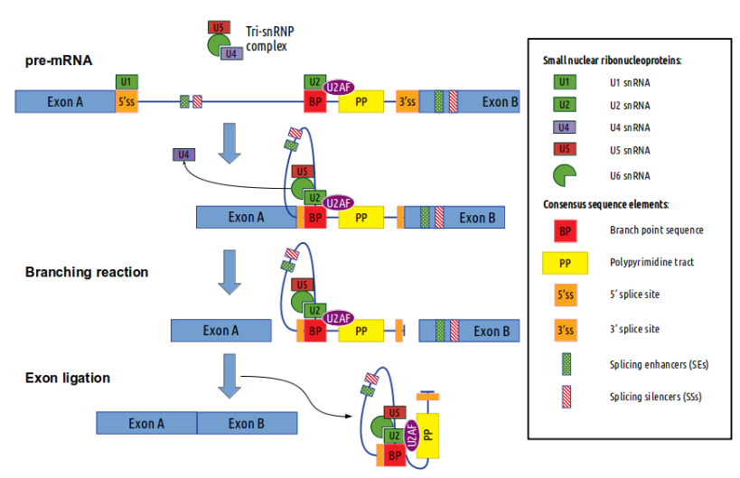
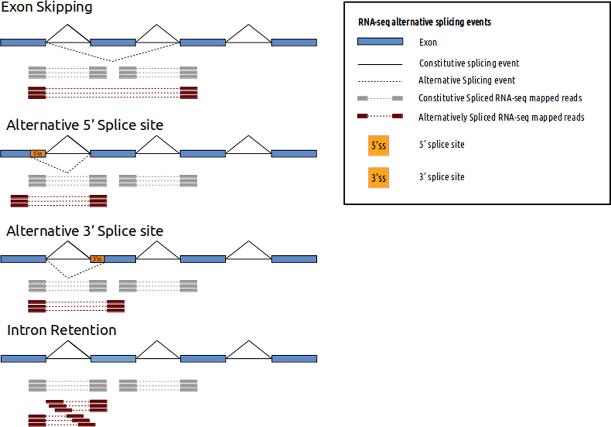
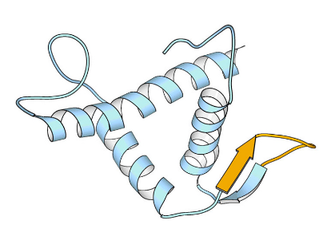
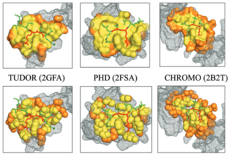
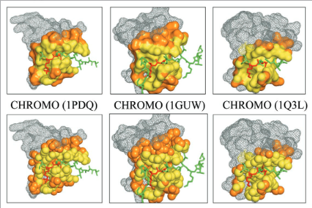
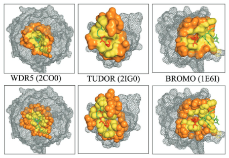

![]()
Understanding the functional connection that occurs for the three nuclear RNA polymerases to synthesize ribosome components during the ribosome biogenesis process has been the focal point of extensive research. To preserve correct homeostasis on the production of ribosomal components, cells might require the existence of proteins that target a common subunit of these RNA polymerases to impact their respective activities. This work describes how the yeast prefoldin-like Bud27 protein, which physically interacts with the Rpb5 common subunit of the three RNA polymerases, is able to modulate the transcription mediated by the RNA polymerase I, likely by influencing transcription elongation, the transcription of the RNA polymerase III, and the processing of ribosomal RNA. Bud27 also regulates both RNA polymerase II-dependent transcription of ribosomal proteins and ribosome biogenesis regulon genes, likely by occupying their DNA ORFs, and the processing of the corresponding mRNAs. With RNA polymerase II, this association occurs in a transcription rate-dependent manner. Our data also indicate that Bud27 inactivation alters the phosphorylation kinetics of ribosomal protein S6, a readout of TORC1 activity. We conclude that Bud27 impacts the homeostasis of the ribosome biogenesis process by regulating the activity of the three RNA polymerases and, in this way, the synthesis of ribosomal components. This quite likely occurs through a functional connection of Bud27 with the TOR signaling pathway.
In recent years, high-throughput next-generation sequencing technology has allowed a rapid increase in diagnostic capacity and precision through different bioinformatics processing algorithms, tools, and pipelines. The identification, annotation, and classification of sequence variants within different target regions are now considered a gold standard in clinical genetic diagnosis. However, this procedure lacks the ability to link regulatory events such as differential splicing to diseases. RNA-seq is necessary in clinical routine in order to interpret and detect among others splicing events and splicing variants, as it would increase the diagnostic rate by up to 10-35%. The transcriptome has a very dynamic nature, varying according to tissue type, cellular conditions, and environmental factors that may affect regulatory events such as splicing and the expression of genes or their isoforms. RNA-seq offers a robust technical analysis of this complexity, but it requires a profound knowledge of computational/statistical tools that may need to be adjusted depending on the disease under study. In this article we will cover RNA-seq analyses best practices applied to clinical routine, bioinformatics procedures, and present challenges of this approach.
 
During neurogenesis, dynamic developmental cues, transcription factors and histone modifying enzymes regulate the gene expression programs by modulating the activity of neural-specific enhancers. How transient developmental signals coordinate transcription factor recruitment to enhancers and to which extent chromatin modifiers contribute to enhancer activity is starting to be uncovered. Here, we take advantage of neural stem cells as a model to unravel the mechanisms underlying neural enhancer activation in response to the TGFβ signaling. Genome-wide experiments demonstrate that the proneural factor ASCL1 assists SMAD3 in the binding to a subset of enhancers. Once located at the enhancers, SMAD3 recruits the histone demethylase JMJD3 and the remodeling factor CHD8, creating the appropriate chromatin landscape to allow enhancer transcription and posterior gene activation. Finally, to analyze the phenotypical traits owed to cis-regulatory regions, we use CRISPR-Cas9 technology to demonstrate that the TGFβ-responsive Neurog2 enhancer is essential for proper neuronal polarization.
A precise immune response is essential for cellular homeostasis and animal survival. The paramount importance of its control is reflected by the fact that its non-specific activation leads to inflammatory events that ultimately contribute to the appearance of many chronic diseases. However, the molecular mechanisms preventing non-specific activation and allowing a quick response upon signal activation are not yet fully understood. In this paper we uncover a new function of PHF8 blocking signal independent activation of immune gene promoters. Affinity purifications coupled with mass spectrometry analysis identified SIN3A and HDAC1 corepressors as new PHF8 interacting partners. Further molecular analysis demonstrated that prior to interferon gamma (IFNγ) stimulation, PHF8 is bound to a subset of IFNγ-responsive promoters. Through the association with HDAC1 and SIN3A, PHF8 keeps the promoters in a silent state, maintaining low levels of H4K20me1. Upon IFNγ treatment, PHF8 is phosphorylated by ERK2 and evicted from the promoters, correlating with an increase in H4K20me1 and transcriptional activation. Our data strongly indicate that in addition to its well-characterized function as a coactivator, PHF8 safeguards transcription to allow an accurate immune response.
Cell-free circulating tumour DNA (ctDNA) in plasma has been shown to be informative of the genomic alterations present in tumours and has been used to monitor tumour progression and response to treatments. However, patients with brain tumours do not present with or present with low amounts of ctDNA in plasma precluding the genomic characterization of brain cancer through plasma ctDNA. Here we show that ctDNA derived from central nervous system tumours is more abundantly present in the cerebrospinal fluid (CSF) than in plasma. Massively parallel sequencing of CSF ctDNA more comprehensively characterizes the genomic alterations of brain tumours than plasma, allowing the identification of actionable brain tumour somatic mutations. We show that CSF ctDNA levels longitudinally fluctuate in time and follow the changes in brain tumour burden providing biomarkers to monitor brain malignancies. Moreover, CSF ctDNA is shown to facilitate and complement the diagnosis of leptomeningeal carcinomatosis.
Hereditary angioedema due to C1-inhibitor deficiency (HAE-C1INH) is a rare autosomal-dominant and life-threatening disorder caused by mutations in SERPING1 gene. It is characterized by attacks of angioedema involving the skin and/or the mucosa of the upper airways, as well as the intestinal mucosa. Here we report the case of a patient with HAE-C1INH without family history of angioedema. By sequencing the SERPING1 gene we detected a novel mutation (c.1249 + 5G > A) affecting the 5’ donor splice site in intron 7. We analyzed the SERPING1 cDNA expecting a defect in splicing process but only the wild type allele was detected. SNP analysis of the cDNA sequence demonstrated that only one of the two alleles was present, indicating that the mRNA from the mutated allele was completely degraded. This study reinforces the concept of incomplete penetrance of this disorder since the patients’ mother never presented any sign of angioedema despite carrying the same mutation.
Familial Hemophagocytic Lymphohistiocytosis type 3 (FHL3) is a genetic disorder caused by mutations in UNC13D gene, coding the granule priming factor Munc13-4 that intervenes in NK and T cell cytotoxic function. Here we report the case of a 17-month-old girl with prolonged symptomatic EBV infectious mononucleosis and clinical symptoms of hemophagocytic syndrome. In vitro functional analysis pointed to a degranulation defect. The genetic analysis of UNC13D gene identified initially a heterozygous mutation (c.753+1G>T) in the donor splice-site that resulted in exon 9 skipping (maternal allele). Mutations in other genes were considered, but additional analysis of UNC13D cDNA revealed in the paternal allele a heterozygous transition from G to A (c.2448-13G>A) at the 3’ acceptor splice-site in intron 25, generating a new acceptor splice-site that leads to a frameshift and a premature STOP codon. Allele specific amplification of the cDNA confirmed the absence of a functional mRNA from the paternal allele. This case illustrates an atypical compound heterozygous UNC13D mutation affecting the RNA splicing that generates a typical FHL3 phenotype.
Hereditary angioedema due to C1-inhibitor deficiency (HAE-C1INH) is a rare autosomal-dominant disease caused by mutations in SERPING1 gene. The main clinical feature of C1INH deficiency is the spontaneous edema of the subcutaneous and submucosal layers. More than 280 different mutations scattering the entire SERPING1 gene have been reported. We identified and characterized a new mutation in SERPING1 gene in a Spanish family with hereditary angioedema. The mutation (c.685 + 2 T > A) disrupts the donor splice site of intron 4 leading to the loss of exon 4 in mutant mRNA. We demonstrated that mutant mRNA is mostly degraded, probably by the surveillance pathway no-go mRNA decay. Bioinformatic analysis showed that the mutant protein, if produced, would be non-functional since the protein lacks a stretch of 45 amino acids affecting the functional RCL loop. Finally, we found a reduction of the wild-type mRNA expression in c.685 + 2 T > A carriers.
Hereditary hemochromatosis (HH) type 3 is an autosomal recessive disorder of iron metabolism characterized by excessive iron deposition in the liver and caused by mutations in the transferrin receptor 2 (TFR2) gene. Here, we describe three new HH type 3 Spanish families with four TFR2 mutations (p.Gly792Arg, c.1606-8A>G, Gln306*, and Gln672*). The missense variation p.Gly792Arg was found in homozygosity in two adult patients of the same family, and in compound heterozygosity in an adult proband that also carries a novel intronic change (c.1606-8A>G). Two new nonsense TFR2 mutations (Gln306* and Gln672*) were detected in a pediatric case. We examine the functional consequences of two TFR2 variants (p.Gly792Arg and c.1606-8A>G) using molecular and computational methods. Cellular protein localization studies using immunofluorescence demonstrated that the plasma membrane localization of p.Gly792Arg TFR2 is impaired. Splicing studies in vitro and in vivo reveal that the c.1606-8A>G mutation leads to the creation of a new acceptor splice site and an aberrant TFR2 mRNA. The reported mutations caused HH type 3 by protein truncation, altering TFR2 membrane localization or by mRNA splicing defect, producing a nonfunctional TFR2 protein and a defective signaling transduction for hepcidin regulation. TFR2 genotyping should be considered in adult but also in pediatric cases with early-onset of iron overload.
At present we know that phenotypic differences between organisms arise from a variety of sources, like protein sequence divergence, regulatory sequence divergence, alternative splicing, etc. However, we do not have yet a complete view of how these sources are related. Here we address this problem, studying the relationship between protein divergence and the ability of genes to express multiple isoforms. We used three genome-wide datasets of human-mouse orthologs to study the relationship between isoform multiplicity co-occurrence between orthologs (the fact that two orthologs have more than one isoform) and protein divergence. In all cases our results showed that there was a monotonic dependence between these two properties. We could explain this relationship in terms of a more fundamental one, between exon number of the largest isoform and protein divergence. We found that this last relationship was present, although with variations, in other species (chimpanzee, cow, rat, chicken, zebrafish and fruit fly). In summary, we have identified a relationship between protein divergence and isoform multiplicity co-occurrence and explained its origin in terms of a simple gene-level property. Finally, we discuss the biological implications of these findings for our understanding of inter-species phenotypic differences.
The recent drop in genome sequencing costs has created a promising horizon for the development of genomic medicine. Within the biomedical environment, sequencing data are increasingly used for disease diagnosis and prognosis, treatment development, counseling, and so on. Many of these applications rely on the identification of disease causing variants. This is a particularly challenging problem because of the large number and wide variety of sequence variants identified in sequencing projects, and also because we only have a limited understanding of the physicochemical-biochemical properties that differentiate neutral from pathologic variants. Nonetheless, these last years have witnessed important methodological advances for one class of variants, those corresponding to changes in the amino-acid sequence of proteins.
Proteins are a main constituent of living systems. We know that although their biological properties are essentially determined by the amino-acid sequence, not all the changes in this sequence have the same impact. Some are neutral, but others affect protein function and lead to disease. A large body of evidence shows that whether one or the other is the case that depends on properties such as mutation location in the protein structure, interspecies conservation, and so on. Mutation prediction methods based on these features have good success rates, in the 70–90% range, although representation over time suggests there is a performance plateau that would limit their applicability. In light of the most recent advances in the field, and after reviewing the foundations of prediction methods, we discuss the existence of this performance threshold and how it can be overcomed.
Loss-of-function mutations of the enzyme alpha-galactosidase A (GLA) causes Fabry disease (FD), that is a rare and potentially fatal disease. Identification of these pathological mutations by sequencing is important because it allows an early treatment of the disease. However, before taking any treatment decision, if the mutation identified is unknown, we first need to establish if it is pathological or not. General bioinformatic tools (PolyPhen-2, SIFT, Condel, etc.) can be used for this purpose, but their performance is still limited. Here we present a new tool, specifically derived for the assessment of GLA mutations. We first compared mutations of this enzyme known to cause FD with neutral sequence variants, using several structure and sequence properties. Then, we used these properties to develop a family of prediction methods adapted to different quality requirements. Trained and tested on a set of known Fabry mutations, our methods have a performance (Matthews correlation: 0.56-0.72) comparable or better than that of the more complex method, Polyphen-2 (Matthews correlation: 0.61), and better than those of SIFT (Matthews correl.: 0.54) and Condel (Matthews correl.: 0.51). This result is validated in an independent set of 65 pathological mutations, for which our method displayed the best success rate (91.0%, 87.7%, and 73.8%, for our method, PolyPhen-2 and SIFT, respectively). These data confirmed that our specific approach can effectively contribute to the identification of pathological mutations in GLA, and therefore enhance the use of sequence information in the identification of undiagnosed Fabry patients.
Mouse models of intestinal crypt cell differentiation and tumorigenesis have been used to characterize the molecular mechanisms underlying both processes. DNA methylation is a key epigenetic mark and plays an important role in cell identity and differentiation programs and cancer. To get insights into the dynamics of cell differentiation and malignant transformation we have compared the DNA methylation profiles along the mouse small intestine crypt and early stages of tumorigenesis. Genome-scale analysis of DNA methylation together with microarray gene expression have been applied to compare intestinal crypt stem cells (EphB2high), differentiated cells (EphB2negative), ApcMin/+ adenomas and the corresponding non-tumor adjacent tissue, together with small and large intestine samples and the colon cancer cell line CT26. Compared with late stages, small intestine crypt differentiation and early stages of tumorigenesis display few and relatively small changes in DNA methylation. Hypermethylated loci are largely shared by the two processes and affect the proximities of promoter and enhancer regions, with enrichment in genes associated with the intestinal stem cell signature and the PRC2 complex. The hypermethylation is progressive, with minute levels in differentiated cells, as compared with intestinal stem cells, and reaching full methylation in advanced stages. Hypomethylation shows different signatures in differentiation and cancer and is already present in the non-tumor tissue adjacent to the adenomas in ApcMin/+ mice, but at lower levels than advanced cancers. This study provides a reference framework to decipher the mechanisms driving mouse intestinal tumorigenesis and also the human counterpart.
Cancer cells exhibit multiple epigenetic changes with prominent local DNA hypermethylation and widespread hypomethylation affecting large chromosomal domains. Epigenome studies often disregard the study of repeat elements owing to technical complexity and their undefined role in genome regulation. We have developed NSUMA (Next-generation Sequencing of UnMethylated Alu), a cost-effective approach allowing the unambiguous interrogation of DNA methylation in more than 130,000 individual Alu elements, the most abundant retrotransposon in the human genome. DNA methylation profiles of Alu repeats have been analyzed in colon cancers and normal tissues using NSUMA and whole-genome bisulfite sequencing. Normal cells show a low proportion of unmethylated Alu (1%-4%) that may increase up to 10-fold in cancer cells. In normal cells, unmethylated Alu elements tend to locate in the vicinity of functionally rich regions and display epigenetic features consistent with a direct impact on genome regulation. In cancer cells, Alu repeats are more resistant to hypomethylation than other retroelements. Genome segmentation based on high/low rates of Alu hypomethylation allows the identification of genomic compartments with differential genetic, epigenetic, and transcriptomic features. Alu hypomethylated regions show low transcriptional activity, late DNA replication, and its extent is associated with higher chromosomal instability. Our analysis demonstrates that Alu retroelements contribute to define the epigenetic landscape of normal and cancer cells and provides a unique resource on the epigenetic dynamics of a principal, but largely unexplored, component of the primate genome.
The progressive restriction of differentiation potential from pluripotent embryonic stem cells (ESCs) to tissue-specific stem cells involves widespread epigenetic reprogramming, including modulation of DNA methylation patterns. Skeletal muscle stem cells are required for the growth, maintenance, and regeneration of skeletal muscle. To investigate the contribution of DNA methylation to the establishment of the myogenic program, we analyzed ESCs, skeletal muscle stem cells in proliferating (myoblasts) and differentiating conditions (myotubes), and mature myofibers. About 1.000 differentially methylated regions were identified during muscle-lineage determination and terminal differentiation, mainly located in gene bodies and intergenic regions. As a whole, myogenic stem cells showed a gain of DNA methylation, while muscle differentiation was accompanied by loss of DNA methylation in CpG-poor regions. Notably, the hypomethylated regions in myogenic stem cells were neighbored by enhancer-type chromatin, suggesting the involvement of DNA methylation in the regulation of cell-type specific enhancers. Interestingly, we demonstrated the hypomethylation of the muscle cell-identity Myf5 super-enhancer only in muscle cells. Furthermore, we observed that upstream stimulatory factor 1 binding to Myf5 super-enhancer occurs upon DNA demethylation in myogenic stem cells. Taken altogether, we characterized the unique DNA methylation signature of skeletal muscle stem cells and highlighted the importance of DNA methylation-mediated regulation of cell identity Myf5 super-enhancer during cellular differentiation.
The existence of different patterns of chemical modifications (acetylation, methylation, phosphorylation, ubiquitination and ADP-ribosylation) of the histone tails led, some years ago, to the histone code hypothesis. According to this hypothesis, these modifications would provide binding sites for proteins that can change the chromatin state to either active or repressed. Interestingly, some protein domains present in histone-modifying enzymes are known to interact with these covalent marks in the histone tails. This was first shown for the bromodomain, which was found to interact selectively with acetylated lysines at the histone tails. More recently, it has been described that the chromodomain can be targeted to methylation marks in histone N-terminal domains. Finally, the interaction between the SANT domain and histones is also well documented.
Overall, experimental evidence suggests that these domains could be involved in the recruitment of histone-modifying enzymes to discrete chromosomal locations, and/or in the regulation their enzymatic activity. Within this context, we review the distribution of bromodomains, chromodomains and SANT domains among chromatin-modifying enzymes and discuss how they can contribute to the translation of the histone code.
Background: Epigenetic regulators (histone acetyltransferases, methyltransferases, chromatin-remodelling enzymes, etc) play a fundamental role in the control of gene expression by modifying the local state of chromatin. However, due to their recent discovery, little is yet known about their own regulation. This paper addresses this point, focusing on alternative splicing regulation, a mechanism already known to play an important role in other protein families, e.g. transcription factors, membrane receptors, etc.
Results: To this end, we compiled the data available on the presence/absence of alternative splicing for a set of 160 different epigenetic regulators, taking advantage of the relatively large amount of unexplored data on alternative splicing available in public databases. We found that 49 % (70 % in human) of these genes express more than one transcript. We then studied their alternative splicing patterns, focusing on those changes affecting the enzyme’s domain composition. In general, we found that these sequence changes correspond to different mechanisms, either repressing the enzyme’s function (e.g. by creating dominant-negative inhibitors of the functional isoform) or creating isoforms with new functions.
Conclusion: We conclude that alternative splicing of epigenetic regulators can be an important tool for the function modulation of these enzymes. Considering that the latter control the transcriptional state of large sets of genes, we propose that epigenetic regulation of gene expression is itself strongly regulated by alternative splicing.

Structural characterization of the interaction between histone tails and effector modules (bromodomains, chromodomains, PHD fingers, etc.) is fundamental to understand the mechanistic aspects of epigenetic regulation of gene expression. In recent years many researchers have applied this approach to specific systems, thus providing a valuable but fragmentary view of the histone-effector interaction. In our work we use this information to characterize the structural features of the two main components of this interaction, histone peptides and the binding site of effector domains (focusing on those which target modified lysines), and increase our knowledge on its specificity determinants. Our results show that the binding sites of effectors are structurally variable, but some clear trends allow their classification in three main groups: flat-groove, narrow-groove and cavity-insertion. In addition, we found that even within these classes binding site variability is substantial. These results in context with the work from other researchers indicate that the there are at least two determinants of binding specificity in the binding site of effector modules. Finally, our analysis of the histone peptides sheds light on the structural transition experienced by histone tails upon effector binding, showing that it may vary depending on the local properties of the sequence stretch considered, thus allowing us to identify an additional specificity determinant for this interaction. Overall, the results of our analysis contribute to clarify the origins of specificity: different regions of the binding site and, in particular, differences in the disorder-order transitions experienced by different histone sequence stretches upon binding.
  
Background: Comparative, or homology, modelling of protein structures is the most widely used prediction method when the target protein has homologues of known structure. Given that the quality of a model may vary greatly, several studies have been devoted to identifying the factors that influence modelling results. These studies usually consider the protein as a whole, and only a few provide a separate discussion of the behaviour of biologically relevant features of the protein. Given the value of the latter for many applications, here we extended previous work by analysing the preservation of native protein clefts in homology models. We chose to examine clefts because of their role in protein function/structure, as they are usually the locus of protein-protein interactions, host the enzymes’ active site, or, in the case of protein domains, can also be the locus of domain-domain interactions that lead to the structure of the whole protein.
Results: We studied how the largest cleft of a protein varies in comparative models. To this end, we analysed a set of 53507 homology models that cover the whole sequence identity range, with a special emphasis on medium and low similarities. More precisely we examined how cleft quality - measured using six complementary parameters related to both global shape and local atomic environment, depends on the sequence identity between target and template proteins. In addition to this general analysis, we also explored the impact of a number of factors on cleft quality, and found that the relationship between quality and sequence identity varies depending on cleft rank amongst the set of protein clefts (when ordered according to size), and number of aligned residues.
Conclusion: We have examined cleft quality in homology models at a range of seq.id. levels. Our results provide a detailed view of how quality is affected by distinct parameters and thus may help the user of comparative modelling to determine the final quality and applicability of his/her cleft models. In addition, the large variability in model quality that we observed within each sequence bin, with good models present even at low sequence identities (between 20% and 30%), indicates that properly developed identification methods could be used to recover good cleft models in this sequence range.
Recent studies have shown how alternative splicing (AS), the process by which eukaryotic genes express more than one product, affects protein sequence and structure. However, little information is available on the impact of AS on protein dynamics, a property fundamental for protein function. In this work, we have addressed this issue using molecular dynamics simulations of the isoforms of two model proteins: glutathione S-transferase and ectodysplasin-A. We have found that AS does not have a noticeable impact on global or local structure fluctuations. We have also found that, quite interestingly, AS has a significant effect on the coupling between key structural elements such as surface cavities. Our results provide the first atom-level view of the impact of AS on protein dynamics, as far as we know. They can contribute to refine our present view of the relationship between AS and protein disorder and, more importantly, they reveal how AS may modify structural dynamic couplings in proteins.